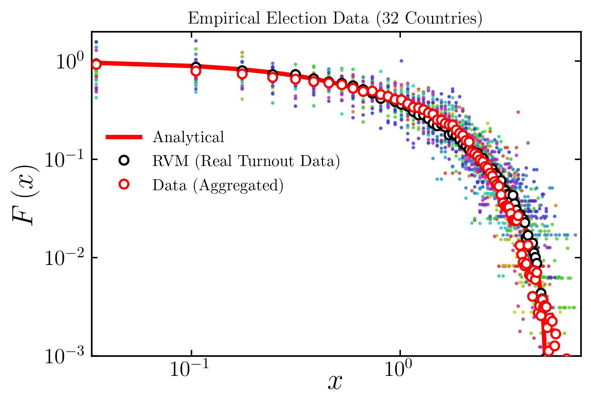
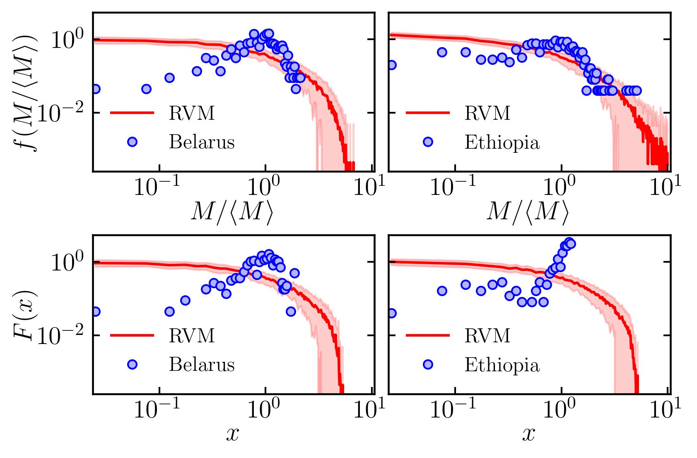

Can we predict margin?
In any election, an informative indicator of the degree of competition and the extent of consensus is the victory margin. A vanishing margin signifies tight competition and a divided electorate, whereas large margins indicate a decisive mandate and overwhelming consensus in favor of one candidate.
Now one of the natural questions that arises: Can we predict margins? It turns out the answer is Yes (well, sort of)! Using the random voting model, RVM in short, we can predict the distribution of margins (appropriately scaled), when the turnout data of any election is provided.
Scaled Margin Distribution
What is universality?
Imagine uncovering patterns so robust they hold true across the globe, regardless of country, culture, or rules. This is the essence of universality — simple, universal trend hidden within the chaos of complex systems like elections.
While margin of victory is an indicator of electoral competition, the margin-to-turnout ratio, later called as the specific margin, captures the competitiveness of an election irrespective of the size of the electorate. The distribution of specific margin, when scaled by it's mean, display a universal trend, regardless of electorate size (from municipal elections to state-level and Parliamentary elections), country, region, or the finer details of how the elections are conducted.
Universal distribution of scaled specific margins
How to detect electoral malpractice?
Voter turnouts drive the margin of victory and the scaled specific margin distributions follow a robust universal trend. Now by analyzing election data, any significant deviation from this expected pattern can serve as a red flag, indicating potential fraud or manipulation. For instance, elections in Ethiopia and Belarus exhibited clear deviations from the universal norm, aligning with reports from international media and civil organizations about potential electoral malpractices
Flagged Elections: Ethiopia and Belarus
Can we predict vote distributions?
The random voting model can accurately predict the scaled margin distribution from turnout data alone, as well as the universal trend. This leads to a natural question: Does the voter turnouts encode information about other key electoral statistics? And can we leverage RVM to predict those statistics?
Using election data of India spanning several decades and electoral scales, we discover that the scaled distributions of votes received by the winner and the runner-up can indeed be predicted with remarkable accuracy using RVM and voter turnouts.